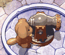

| A | A地点には敵がたくさんいます。 なかでもくらげさんは強いので注意しましょう。 |
| B、B' | B地点とB'地点には風船があります。 風船を割るとモンスターが出てくるので、奇襲を食らわないように。 |
| C  |
C地点には大砲を手にしたこぼるとがいます。 ピピロが属性魔法を使えないときは、爆弾をセットしましょう。 タイミングさえ合えばポックルでも倒せるのですが、かなり危険です。 |
| D | D地点にはこぼるとがとらわれています。 こぼると以外の敵を倒すと、D'地点への扉が開きます。 「なにもするな」に設定しておかないと、ほぼ100%倒してしまいます。 |
| E |
EからE'地点まで罠が仕掛けられています。 画像の地点が特にわかりにくいので慎重に。 |
| F |
F地点には3つ宝箱があります。 画像のように開閉をするとF'地点への扉が開くはずです。 |